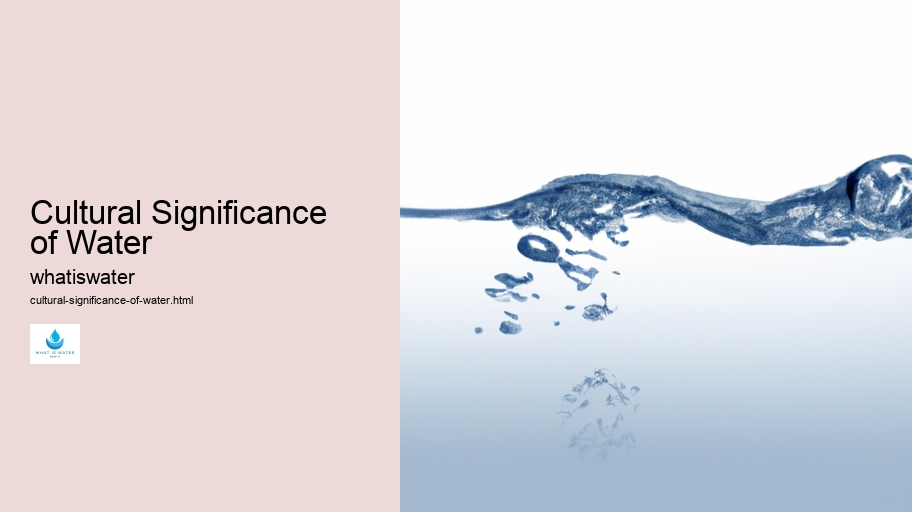

Hydrological Cycle
Hydrological Cycle
Evaporation and transpiration
Condensation and cloud formation
Precipitation and rain patterns
Surface runoff and river systems
Groundwater flow and aquifers
Snowmelt and glacial processes
Water storage in oceans lakes and reservoirs
Soil moisture and infiltration
Water balance and budgeting
Human impact on the hydrological cycle
Marine Ecosystems
Marine Ecosystems
Coral reefs and their biodiversity
Mangrove forests as coastal protectors
Ocean currents and climate regulation
Deepsea habitats and extremophiles
Intertidal zones and estuarine ecosystems
Marine food webs and trophic levels
Freshwater Ecosystems
Freshwater Ecosystems
Conservation efforts for marine species
Marine biogeochemical cycles
Impact of global warming on oceans
Water Resource Management
Water Resource Management
Rivers streams and creeks ecosystems
Lakes ponds wetlands habitats
Biodiversity in freshwater environments
Aquatic plants role in oxygenation
Freshwater fish species diversity
Invasive species impact on freshwater systems
Pollution threats to freshwater sources
Conservation strategies for freshwater biomes
Role of wetlands in flood control
Importance of riparian buffers
Cultural Significance of Water
Cultural Significance of Water
Sustainable water use practices
Desalination technologies for fresh water supply
Wastewater treatment processes
Rainwater harvesting techniques
Management of water during drought conditions
Transboundary water resource politics
Infrastructure for water distribution
Agricultural irrigation efficiency
Urban water demand management
Impact of climate change on water resources
About Us
Contact Us

Cultural Significance of Water
>
Glaciers and Ice Caps
**The Profound Essence of Aquatic Heritage**
Water, a seemingly ordinary substance, is steeped in profound cultural significance that transcends mere physical properties.
Climate Change and Water
Every civilization has recognized its intrinsic value, not only for survival but also as a potent symbol woven into the fabric of societal customs and beliefs.
From the sacred rivers of India to the baptismal rites in Christianity, water serves as a touchstone for spirituality and purification.
Cultural Significance of Water - Aquatic Ecosystems
Water Education
Floods
Irrigation
It's an element that cleanses not just the body but also the soul, offering rebirth and renewal across diverse religious landscapes.
Ancient mythologies often depict deities with dominion over water, showcasing its revered status.
Cultural Significance of Water - Water in Agriculture
Aquatic Ecosystems
Climate Change and Water
Aquifers
Water Treatment
Water Education
Floods
Poseidon ruled the sea's vast expanse in Greek mythology, while Tlaloc oversaw rain in Aztec tradition.
Aquatic Ecosystems
These figures represent humanity's awe and respect toward this vital resource.
Moreover, communal gatherings frequently occur near waterscapes: wells, rivers, or oceansides serving as social hubs. Here people converge to share stories or celebrate rituals that have echoed through generations—each ripple on the surface carrying tales of ancestors long gone.
Architecturally too, civilizations have historically gravitated towards water—erecting cities along riverbanks or coastlines where trade and culture flourish. Iconic structures like Venice’s canals or Istanbul’s Bosphorus strait embody how geography can shape society's heartbeat.
Even today, our connection with water remains undiminished—informing artistry from literature to painting where it often symbolizes emotion's depth and life's ephemerality.
Surface Water
In poetry especially, liquid imagery flows through verses conveying love’s depth or sorrow’s weight.
As climate concerns intensify, preserving this precious heritage becomes imperative—we must safeguard not only physical reservoirs but also our aquatic cultural legacy for future generations to cherish just as deeply as we do now.
In summary, while it sustains life biologically; culturally speaking—it enriches it immeasurably. The essence of water is interwoven so intimately within human history that one cannot be fully understood without acknowledging the other—a testament to its unyielding power and perennial grace.
Glaciers and Ice Caps
Aquifers
Hydrological Cycle
Check our other pages :
Management of water during drought conditions
Sustainable water use practices
Desalination technologies for fresh water supply
Mangrove forests as coastal protectors
Frequently Asked Questions
How has water been central to the development of human civilizations?
Water has been critical in shaping human societies because it is essential for survival, agriculture, and transportation. Civilizations often sprung up around rivers and bodies of water, which provided a reliable source of fresh water for drinking, growing crops, facilitating trade, and enabling communication. Rivers like the Nile in Egypt or the Tigris and Euphrates in Mesopotamia are prime examples of waters role as a catalyst for societal development.
Can you explain how myths and legends have contributed to our understanding of waters cultural importance?
Myths and legends often reflect humanity’s awe towards natural phenomena including waterscapes. Theyve helped shape cultural narratives about origins (creation stories involving primordial waters), cautionary tales (flood myths warning against moral decadence), heroism (stories about crossing dangerous seas), or mystical powers (legends about healing springs). These tales underscore how integral water has always been to our collective imagination.
What impact does access to clean drinking water have on culture?
Access - or lack thereof - to clean drinking water can strongly influence cultural structures. Communities with plentiful clean water may develop rich traditions centered around their abundant resource; conversely, those without adequate supplies might prioritize conservation within their social practices or be compelled into conflicts over scarce resources. Furthermore, struggles for access can lead to migrations that reshape demographic compositions along with cultural identities.